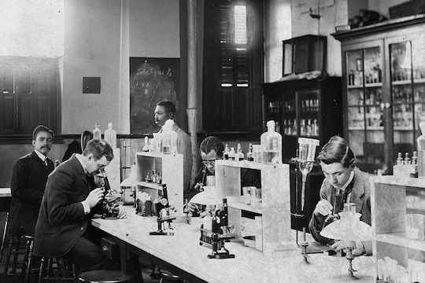
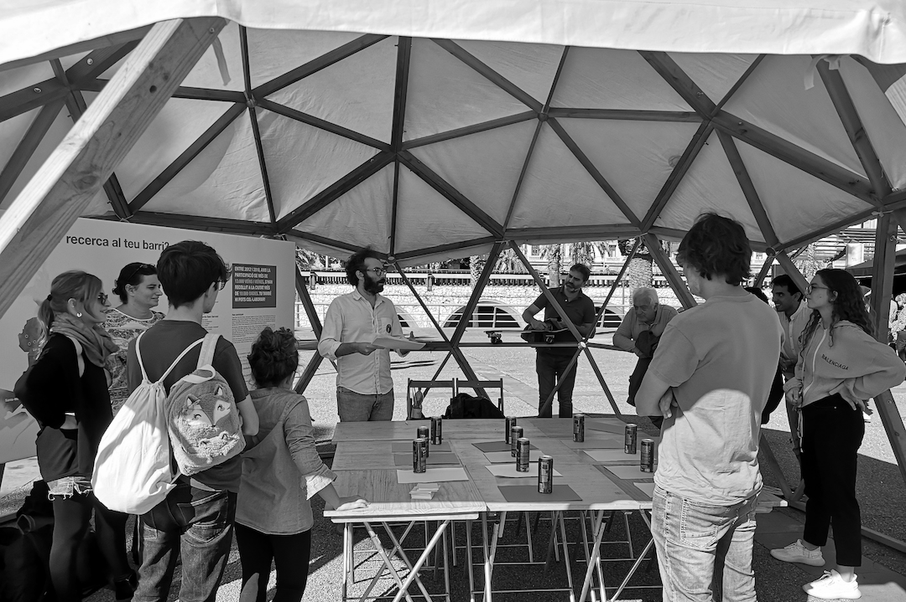
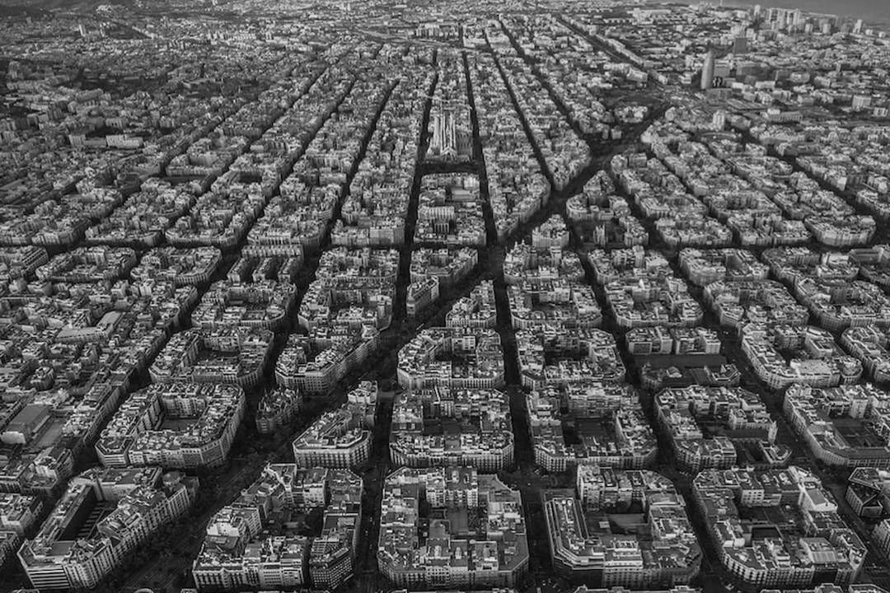
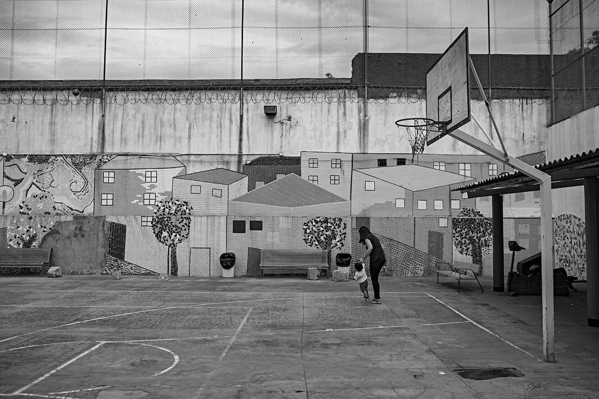

March 16th, 2021
Masterclass
Masterclass: "Mobility in times of pandemics"
© Tibidabo | Avió Tibidabo
Masterclass focused on the study of human mobility and its impact on the
spreading of the epidemic. Furthermore, I overviewed the consequences of human
mobility beyond
the epidemic, such as the use of a variety of data sources to study
mobility and the challenges in terms of data-driven decision-support systems,
data governance, open data and privacy by design in projects with remarkable social
implications.
This masterclass was given within the framework of
Mobile Week in collaboration with Barcelona Activa.
February, 2021
Jury Panel
Jury member of "Artist for Media" track in mediafutures
© Marjory Collins | New York Times newsroom (1942)
Member of the jury panel and reviewer of the proposals submitted in the 1st open
call of MediaFutures project
addressed to startups and artists working on creative data-driven solutions on
communication, science, and democracy around misinformation and coronavirus.
I will participate together with colleges from institutions like IRCAM, FutureEverything, or
King's College of London,
selecting the best Artist for Media projects, among more than 40
applications, that use data as an art material to explore new ideas and
technology to question its impact on individuals and society.

© William Edward Burghardt | Bacteriology Lab, Howard University. Washington, D.C. (1900)
Research lines offered to students in the Master of Data Science at Universitat Oberta de Catalunya (UOC) to develop their master's thesis during the academic year 2020/21. The research lines are focused on the aplication of data science techniques to study complex social systems and different aspects of social behaviour by analysing data from urban systems, social networks, citizen science projects and game theory experiments. Projects that expect to develop systems merging artificial intelligence and art are welcomed, specially generative art proposals.
October 26th, 2019
Workshop

© Barcelona Ciència | Festa de la Ciència
Presentation of «The Housing Game» results at the Festa de la Ciència in Barcelona by OpenSystems members. «The Housing Game» is a citizen science project aimed to understand the dilemmas that arise in the decision-making process of citizens in the context of the housing market. This project has been co-created with librarians, library-goers and the local community within the BiblioLab program of the Municipal Libraries of the district of Fort Pienc.

© Library of Congress | New York Public Library, 1918
Series of articles that aim to share citizen science experiences and reflections by the OpenSystems group, which shares its experiences from around the world, many of them unknown in Barcelona. Citizen science involves citizen participation in science, but it also boosts collaboration and impacts in other disciplines. These articles, written collaboratively by the members of OpenSystems, tackle the relation of Citizen Science with Arts, Public Libraries and Community Actions.
Febraury 13th, 2019
Workshop

© Sebastien Nagy | Barcelona
Citizen science practices have been boosted in urban contexts around the world. Participatory efforts include identification of concerns, definition and design of research, collection of data and the proposals of actions that respond to specific concerns with scientific evidence. This event counted on the insights, among others, of Louis Francis (Mapping for change), who talked about environmental actions and air quality, Shannon Dosemagen (Public Lab), who shed light on community science and collective action, and LeeAnne Walters, who explained the experience of the Flint water crisis supply. These were only some of the interesting talks about citizen science and actions that took place at «. The event was organized by OpenSystems members as part of Biennal Ciutat i Ciència and the Citizen Science COST Action 15212.
Febraury 13th, 2019
Workshop

© Francesc Melcion | Wad-Ras Prison
Workshop carried out at the Barcelona Women’s Penitentiary Centre, popularly known as Wad-Ras prison. The objective was for inmates to discover a series of citizen science projects that can be performed online from anywhere with an internet connection. Some examples are projects to classify galaxies or identify animals in the African Savannah with ZooUniverse, resolve the structure of a protein with Foldit or map a brain in 3D. This workshop also focuses on discussing expertise and non-expertise, interest and passion, and, above all, on how we can build knowledge and transform this learning process into a worthwhile activity. This workshop was part of the Biennal Ciutat i Ciència of Barcelona.
June 9st-10st, 2018
Workshop

© OpenSystems | Festa de la ciència
Behavioral experiment focused on the study of human behaviour in relation to the air quality of a city. In this experiment, performed on the Festa de la Ciència in Barcelona, citizens of Barcelona participated in a citizen science investigation aimed to research the nitrogen dioxide (NO2) concentration measurements in more than 800 points across Barcelona. Based on these results, the participants had to contribute in a social dilemma to launch a collective action related to air quality.